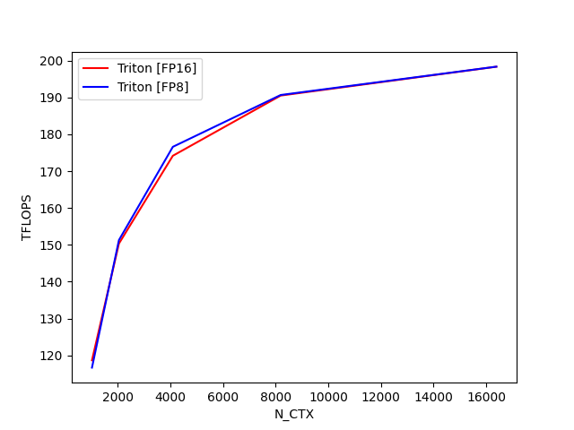

Note
Go to the end to download the full example code
Fused Attention¶
This is a Triton implementation of the Flash Attention v2 algorithm from Tri Dao (https://tridao.me/publications/flash2/flash2.pdf)
Extra Credits: - Original flash attention paper (https://arxiv.org/abs/2205.14135) - Rabe and Staats (https://arxiv.org/pdf/2112.05682v2.pdf) - Adam P. Goucher for simplified vector math


- 
fused-attention-batch4-head48-d64-fwd:
N_CTX Triton
0 1024.0 156.582708
1 2048.0 165.078492
2 4096.0 168.435375
3 8192.0 172.540382
4 16384.0 173.552724
fused-attention-batch4-head48-d64-fwd:
N_CTX Triton
0 1024.0 118.696313
1 2048.0 137.118141
2 4096.0 148.649480
3 8192.0 156.567780
4 16384.0 153.572680
fused-attention-batch4-head48-d64-bwd:
N_CTX Triton
0 1024.0 77.258099
1 2048.0 87.191667
2 4096.0 91.985607
3 8192.0 94.637271
4 16384.0 96.547653
fused-attention-batch4-head48-d64-bwd:
N_CTX Triton
0 1024.0 54.307570
1 2048.0 67.925415
2 4096.0 76.476092
3 8192.0 81.528548
4 16384.0 84.817752
import pytest
import torch
import triton
import triton.language as tl
@triton.jit
def max_fn(x, y):
return tl.math.max(x, y)
@triton.jit
def _fwd_kernel(
Q, K, V, sm_scale,
L,
Out,
stride_qz, stride_qh, stride_qm, stride_qk,
stride_kz, stride_kh, stride_kn, stride_kk,
stride_vz, stride_vh, stride_vk, stride_vn,
stride_oz, stride_oh, stride_om, stride_on,
Z, H, N_CTX,
BLOCK_M: tl.constexpr, BLOCK_DMODEL: tl.constexpr,
BLOCK_N: tl.constexpr,
IS_CAUSAL: tl.constexpr,
):
start_m = tl.program_id(0)
off_hz = tl.program_id(1)
qvk_offset = off_hz * stride_qh
Q_block_ptr = tl.make_block_ptr(
base=Q + qvk_offset,
shape=(N_CTX, BLOCK_DMODEL),
strides=(stride_qm, stride_qk),
offsets=(start_m * BLOCK_M, 0),
block_shape=(BLOCK_M, BLOCK_DMODEL),
order=(1, 0)
)
K_block_ptr = tl.make_block_ptr(
base=K + qvk_offset,
shape=(BLOCK_DMODEL, N_CTX),
strides=(stride_kk, stride_kn),
offsets=(0, 0),
block_shape=(BLOCK_DMODEL, BLOCK_N),
order=(0, 1)
)
V_block_ptr = tl.make_block_ptr(
base=V + qvk_offset,
shape=(N_CTX, BLOCK_DMODEL),
strides=(stride_vk, stride_vn),
offsets=(0, 0),
block_shape=(BLOCK_N, BLOCK_DMODEL),
order=(1, 0)
)
# initialize offsets
offs_m = start_m * BLOCK_M + tl.arange(0, BLOCK_M)
offs_n = tl.arange(0, BLOCK_N)
# initialize pointer to m and l
m_i = tl.zeros([BLOCK_M], dtype=tl.float32) - float("inf")
l_i = tl.zeros([BLOCK_M], dtype=tl.float32)
acc = tl.zeros([BLOCK_M, BLOCK_DMODEL], dtype=tl.float32)
# scale sm_scale by log_2(e) and use
# 2^x instead of exp in the loop because CSE and LICM
# don't work as expected with `exp` in the loop
qk_scale = sm_scale * 1.44269504
# load q: it will stay in SRAM throughout
q = tl.load(Q_block_ptr)
q = (q * qk_scale).to(tl.float16)
# loop over k, v and update accumulator
lo = 0
hi = (start_m + 1) * BLOCK_M if IS_CAUSAL else N_CTX
for start_n in range(lo, hi, BLOCK_N):
# -- load k, v --
k = tl.load(K_block_ptr)
v = tl.load(V_block_ptr)
# -- compute qk ---
qk = tl.zeros([BLOCK_M, BLOCK_N], dtype=tl.float32)
if IS_CAUSAL:
qk = tl.where(offs_m[:, None] >= (start_n + offs_n[None, :]), qk, float("-inf"))
qk += tl.dot(q, k)
# -- compute scaling constant ---
m_i_new = tl.maximum(m_i, tl.max(qk, 1))
alpha = tl.math.exp2(m_i - m_i_new)
p = tl.math.exp2(qk - m_i_new[:, None])
# -- scale and update acc --
acc_scale = l_i * 0 + alpha # workaround some compiler bug
acc *= acc_scale[:, None]
acc += tl.dot(p.to(tl.float16), v)
# -- update m_i and l_i --
l_i = l_i * alpha + tl.sum(p, 1)
m_i = m_i_new
# update pointers
K_block_ptr = tl.advance(K_block_ptr, (0, BLOCK_N))
V_block_ptr = tl.advance(V_block_ptr, (BLOCK_N, 0))
# write back l and m
acc = acc / l_i[:, None]
l_ptrs = L + off_hz * N_CTX + offs_m
tl.store(l_ptrs, m_i + tl.math.log2(l_i))
# write back O
O_block_ptr = tl.make_block_ptr(
base=Out + qvk_offset,
shape=(N_CTX, BLOCK_DMODEL),
strides=(stride_om, stride_on),
offsets=(start_m * BLOCK_M, 0),
block_shape=(BLOCK_M, BLOCK_DMODEL),
order=(1, 0)
)
tl.store(O_block_ptr, acc.to(tl.float16))
@triton.jit
def _bwd_preprocess(
Out, DO,
Delta,
BLOCK_M: tl.constexpr, D_HEAD: tl.constexpr,
):
off_m = tl.program_id(0) * BLOCK_M + tl.arange(0, BLOCK_M)
off_n = tl.arange(0, D_HEAD)
# load
o = tl.load(Out + off_m[:, None] * D_HEAD + off_n[None, :]).to(tl.float32)
do = tl.load(DO + off_m[:, None] * D_HEAD + off_n[None, :]).to(tl.float32)
# compute
delta = tl.sum(o * do, axis=1)
# write-back
tl.store(Delta + off_m, delta)
@triton.jit
def _bwd_kernel(
Q, K, V, sm_scale, Out, DO,
DQ, DK, DV,
L,
D,
stride_qz, stride_qh, stride_qm, stride_qk,
stride_kz, stride_kh, stride_kn, stride_kk,
stride_vz, stride_vh, stride_vk, stride_vn,
Z, H, N_CTX,
num_block,
BLOCK_M: tl.constexpr, BLOCK_DMODEL: tl.constexpr,
BLOCK_N: tl.constexpr,
CAUSAL: tl.constexpr,
):
off_hz = tl.program_id(0)
off_z = off_hz // H
off_h = off_hz % H
qk_scale = sm_scale * 1.44269504
# offset pointers for batch/head
Q += off_z * stride_qz + off_h * stride_qh
K += off_z * stride_qz + off_h * stride_qh
V += off_z * stride_qz + off_h * stride_qh
DO += off_z * stride_qz + off_h * stride_qh
DQ += off_z * stride_qz + off_h * stride_qh
DK += off_z * stride_qz + off_h * stride_qh
DV += off_z * stride_qz + off_h * stride_qh
for start_n in range(0, num_block):
if CAUSAL:
lo = start_n * BLOCK_M
else:
lo = 0
# initialize row/col offsets
offs_qm = lo + tl.arange(0, BLOCK_M)
offs_n = start_n * BLOCK_M + tl.arange(0, BLOCK_M)
offs_m = tl.arange(0, BLOCK_N)
offs_k = tl.arange(0, BLOCK_DMODEL)
# initialize pointers to value-like data
q_ptrs = Q + (offs_qm[:, None] * stride_qm + offs_k[None, :] * stride_qk)
k_ptrs = K + (offs_n[:, None] * stride_kn + offs_k[None, :] * stride_kk)
v_ptrs = V + (offs_n[:, None] * stride_qm + offs_k[None, :] * stride_qk)
do_ptrs = DO + (offs_qm[:, None] * stride_qm + offs_k[None, :] * stride_qk)
dq_ptrs = DQ + (offs_qm[:, None] * stride_qm + offs_k[None, :] * stride_qk)
# pointer to row-wise quantities in value-like data
D_ptrs = D + off_hz * N_CTX
l_ptrs = L + off_hz * N_CTX
# initialize dv amd dk
dv = tl.zeros([BLOCK_M, BLOCK_DMODEL], dtype=tl.float32)
dk = tl.zeros([BLOCK_M, BLOCK_DMODEL], dtype=tl.float32)
# k and v stay in SRAM throughout
k = tl.load(k_ptrs)
v = tl.load(v_ptrs)
# loop over rows
for start_m in range(lo, num_block * BLOCK_M, BLOCK_M):
offs_m_curr = start_m + offs_m
# load q, k, v, do on-chip
q = tl.load(q_ptrs)
# recompute p = softmax(qk, dim=-1).T
if CAUSAL:
qk = tl.where(offs_m_curr[:, None] >= (offs_n[None, :]), float(0.), float("-inf"))
else:
qk = tl.zeros([BLOCK_M, BLOCK_N], dtype=tl.float32)
qk += tl.dot(q, tl.trans(k))
qk *= qk_scale
l_i = tl.load(l_ptrs + offs_m_curr)
p = tl.math.exp2(qk - l_i[:, None])
# compute dv
do = tl.load(do_ptrs)
dv += tl.dot(tl.trans(p.to(Q.dtype.element_ty)), do)
# compute dp = dot(v, do)
Di = tl.load(D_ptrs + offs_m_curr)
dp = tl.zeros([BLOCK_M, BLOCK_N], dtype=tl.float32) - Di[:, None]
dp += tl.dot(do, tl.trans(v))
# compute ds = p * (dp - delta[:, None])
ds = p * dp * sm_scale
# compute dk = dot(ds.T, q)
dk += tl.dot(tl.trans(ds.to(Q.dtype.element_ty)), q)
# compute dq
dq = tl.load(dq_ptrs)
dq += tl.dot(ds.to(Q.dtype.element_ty), k)
tl.store(dq_ptrs, dq)
# increment pointers
dq_ptrs += BLOCK_M * stride_qm
q_ptrs += BLOCK_M * stride_qm
do_ptrs += BLOCK_M * stride_qm
# write-back
dv_ptrs = DV + (offs_n[:, None] * stride_qm + offs_k[None, :] * stride_qk)
dk_ptrs = DK + (offs_n[:, None] * stride_kn + offs_k[None, :] * stride_kk)
tl.store(dv_ptrs, dv)
tl.store(dk_ptrs, dk)
empty = torch.empty(128, device="cuda")
class _attention(torch.autograd.Function):
@staticmethod
def forward(ctx, q, k, v, causal, sm_scale):
# shape constraints
Lq, Lk, Lv = q.shape[-1], k.shape[-1], v.shape[-1]
assert Lq == Lk and Lk == Lv
assert Lk in {16, 32, 64, 128}
o = torch.empty_like(q)
BLOCK_M = 128
BLOCK_N = 64
grid = (triton.cdiv(q.shape[2], BLOCK_M), q.shape[0] * q.shape[1], 1)
L = torch.empty((q.shape[0] * q.shape[1], q.shape[2]), device=q.device, dtype=torch.float32)
num_warps = 4 if Lk <= 64 else 8
_fwd_kernel[grid](
q, k, v, sm_scale,
L,
o,
q.stride(0), q.stride(1), q.stride(2), q.stride(3),
k.stride(0), k.stride(1), k.stride(2), k.stride(3),
v.stride(0), v.stride(1), v.stride(2), v.stride(3),
o.stride(0), o.stride(1), o.stride(2), o.stride(3),
q.shape[0], q.shape[1], q.shape[2],
BLOCK_M=BLOCK_M, BLOCK_N=BLOCK_N, BLOCK_DMODEL=Lk,
IS_CAUSAL=causal,
num_warps=num_warps,
num_stages=4)
ctx.save_for_backward(q, k, v, o, L)
ctx.grid = grid
ctx.sm_scale = sm_scale
ctx.BLOCK_DMODEL = Lk
ctx.causal = causal
return o
@staticmethod
def backward(ctx, do):
BLOCK = 128
q, k, v, o, L = ctx.saved_tensors
do = do.contiguous()
dq = torch.zeros_like(q, dtype=torch.float32)
dk = torch.empty_like(k)
dv = torch.empty_like(v)
delta = torch.empty_like(L)
_bwd_preprocess[(ctx.grid[0] * ctx.grid[1], )](
o, do,
delta,
BLOCK_M=BLOCK, D_HEAD=ctx.BLOCK_DMODEL,
)
_bwd_kernel[(ctx.grid[1],)](
q, k, v, ctx.sm_scale,
o, do,
dq, dk, dv,
L, delta,
q.stride(0), q.stride(1), q.stride(2), q.stride(3),
k.stride(0), k.stride(1), k.stride(2), k.stride(3),
v.stride(0), v.stride(1), v.stride(2), v.stride(3),
q.shape[0], q.shape[1], q.shape[2],
ctx.grid[0],
BLOCK_M=BLOCK, BLOCK_N=BLOCK,
BLOCK_DMODEL=ctx.BLOCK_DMODEL, num_warps=8,
CAUSAL=ctx.causal,
num_stages=1,
)
return dq, dk, dv, None, None
attention = _attention.apply
@pytest.mark.parametrize('Z, H, N_CTX, D_HEAD', [(6, 9, 1024, 64)])
@pytest.mark.parametrize('causal', [False, True])
def test_op(Z, H, N_CTX, D_HEAD, causal, dtype=torch.float16):
torch.manual_seed(20)
q = torch.empty((Z, H, N_CTX, D_HEAD), dtype=dtype, device="cuda").normal_(mean=0., std=0.5).requires_grad_()
k = torch.empty((Z, H, N_CTX, D_HEAD), dtype=dtype, device="cuda").normal_(mean=0., std=0.5).requires_grad_()
v = torch.empty((Z, H, N_CTX, D_HEAD), dtype=dtype, device="cuda").normal_(mean=0., std=0.5).requires_grad_()
sm_scale = 0.5
dout = torch.randn_like(q)
# reference implementation
M = torch.tril(torch.ones((N_CTX, N_CTX), device="cuda"))
p = torch.matmul(q, k.transpose(2, 3)) * sm_scale
if causal:
p[:, :, M == 0] = float("-inf")
p = torch.softmax(p.float(), dim=-1).half()
# p = torch.exp(p)
ref_out = torch.matmul(p, v)
ref_out.backward(dout)
ref_dv, v.grad = v.grad.clone(), None
ref_dk, k.grad = k.grad.clone(), None
ref_dq, q.grad = q.grad.clone(), None
# triton implementation
tri_out = attention(q, k, v, causal, sm_scale).half()
tri_out.backward(dout)
tri_dv, v.grad = v.grad.clone(), None
tri_dk, k.grad = k.grad.clone(), None
tri_dq, q.grad = q.grad.clone(), None
# compare
assert torch.allclose(ref_out, tri_out, atol=1e-2, rtol=0)
assert torch.allclose(ref_dv, tri_dv, atol=1e-2, rtol=0)
assert torch.allclose(ref_dk, tri_dk, atol=1e-2, rtol=0)
assert torch.allclose(ref_dq, tri_dq, atol=1e-2, rtol=0)
try:
from flash_attn.flash_attn_interface import \
flash_attn_qkvpacked_func as flash_attn_func
FLASH_VER = 2
except BaseException:
try:
from flash_attn.flash_attn_interface import flash_attn_func
FLASH_VER = 1
except BaseException:
FLASH_VER = None
HAS_FLASH = FLASH_VER is not None
BATCH, N_HEADS, N_CTX, D_HEAD = 4, 48, 4096, 64
# vary seq length for fixed head and batch=4
configs = [triton.testing.Benchmark(
x_names=['N_CTX'],
x_vals=[2**i for i in range(10, 15)],
line_arg='provider',
line_vals=['triton'] + (['flash'] if HAS_FLASH else []),
line_names=['Triton'] + ([f'Flash-{FLASH_VER}'] if HAS_FLASH else []),
styles=[('red', '-'), ('blue', '-')],
ylabel='ms',
plot_name=f'fused-attention-batch{BATCH}-head{N_HEADS}-d{D_HEAD}-{mode}',
args={'H': N_HEADS, 'BATCH': BATCH, 'D_HEAD': D_HEAD, 'dtype': torch.float16, 'mode': mode, 'causal': causal}
) for mode in ['fwd', 'bwd'] for causal in [False, True]]
@triton.testing.perf_report(configs)
def bench_flash_attention(BATCH, H, N_CTX, D_HEAD, causal, mode, provider, dtype=torch.float16, device="cuda"):
assert mode in ['fwd', 'bwd']
warmup = 25
rep = 100
if provider == "triton":
q = torch.randn((BATCH, H, N_CTX, D_HEAD), dtype=dtype, device="cuda", requires_grad=True)
k = torch.randn((BATCH, H, N_CTX, D_HEAD), dtype=dtype, device="cuda", requires_grad=True)
v = torch.randn((BATCH, H, N_CTX, D_HEAD), dtype=dtype, device="cuda", requires_grad=True)
sm_scale = 1.3
fn = lambda: attention(q, k, v, causal, sm_scale)
if mode == 'bwd':
o = fn()
do = torch.randn_like(o)
fn = lambda: o.backward(do, retain_graph=True)
ms = triton.testing.do_bench(fn, warmup=warmup, rep=rep)
if provider == "flash":
qkv = torch.randn((BATCH, N_CTX, 3, H, D_HEAD), dtype=dtype, device=device, requires_grad=True)
if FLASH_VER == 1:
lengths = torch.full((BATCH,), fill_value=N_CTX, device=device)
cu_seqlens = torch.zeros((BATCH + 1,), device=device, dtype=torch.int32)
cu_seqlens[1:] = lengths.cumsum(0)
qkv = qkv.reshape(BATCH * N_CTX, 3, H, D_HEAD)
fn = lambda: flash_attn_func(qkv, cu_seqlens, 0., N_CTX, causal=causal)
elif FLASH_VER == 2:
fn = lambda: flash_attn_func(qkv, causal=causal)
else:
raise ValueError(f'unknown {FLASH_VER = }')
if mode == 'bwd':
o = fn()
do = torch.randn_like(o)
fn = lambda: o.backward(do, retain_graph=True)
ms = triton.testing.do_bench(fn, warmup=warmup, rep=rep)
flops_per_matmul = 2. * BATCH * H * N_CTX * N_CTX * D_HEAD
total_flops = 2 * flops_per_matmul
if causal:
total_flops *= 0.5
if mode == 'bwd':
total_flops *= 2.5 # 2.0(bwd) + 0.5(recompute)
return total_flops / ms * 1e-9
# only works on post-Ampere GPUs right now
bench_flash_attention.run(save_path='.', print_data=True)
Total running time of the script: ( 0 minutes 14.728 seconds)